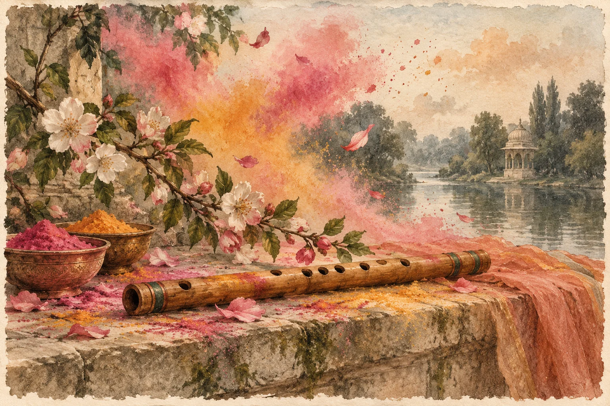

ମୂଳ କବିତା · ଓଡ଼ିଆ
ଅବିର ଖେଳା ରେ..

---------------
ଚଉସମ ସୁଗନ୍ଧି, କନ୍ଦୁଳି ପାଟ ରୁନ୍ଧି.. ବକୁଲେ, ସୁଆଙ୍ଗୀ ସଙ୍ଗିୟା ।
ଚାମୀକର ରଙ୍ଗିଆ, ଯୋଡ଼ି ଝଲଝଲିଆ... ନାଗୁଲେ, ଭଣିତି ଭଙ୍ଗିୟା ରେ ।
ରାଇବର ।
ଧାତା ସେ ଗୋପ ବଲ୍ଲଭରେ।
ପଞ୍ଚରଙ୍ଗୀ ଝୁଲେ ଦୋଳରେ ।
ବସନ୍ତରାସେ ରସି, ଧାଈ ବରଷେ ଖସି.. ଶ୍ରୀଅଙ୍ଗ, ନୀପକେଳି ରଙ୍ଗ ରେ । (୧)
କୁହୁକ କୁହାଟିଲା, ପାଦେ ଧଣ୍ଡ ଶିକୁଳା.. କୁଞ୍ଜରେ, କୁନ୍ଦ ପ୍ରତିହାରୀ।
କୁସୁମିତ କବରୀ, ବିଦମାଳୀ ବଲ୍ଲରୀ.. ବାହୁରେ, ଘେରେ ନଦୀନାରୀ ରେ।
ବଂଶୀଧର ।
ଅବିର ଖେଳା ନ ସରିଲା ।
ରାଧିକା କଟୀରେ ଧଇଲା।
ଅସି କାମର ଦାଢ଼, ଭିଆଣ ମଧୁ ଭିଡ଼... ଅଶୀଳା, ପିରତି କବଲା ରେ । (୨)
----------------------------------
ବୃତ୍ତ - କାମୋଦୀ,
( ରଙ୍ଗ ଉତ୍ସବର ଶୁଭକାମନା ସହ କବିତା ଟିଏ,)
_ ଶକୁନ୍ତଳା ଗୁପ୍ତା, ରାଉରକେଲା
----------------
କିଛି ଶବ୍ଦାର୍ଥ ଭାଷାକୋଷ ରୁ:
ଚାମୀକର - ସୁନା, ସ୍ବର୍ଣ୍ଣମୟ
ଝଲଝଲିଆ - ଦୀପ୍ତି ୟୁକ୍ତ,ଝୁଲୁଥିବା
ନାଗୁଲ - କର୍ଣ୍ଣର ନାଗାକୃତି ଅଳଙ୍କାର
ବିଦମାଳୀ - ଭୁଜ ର ଅଳଙ୍କାର
ଭଣିତି- କଥନ, ବାକ୍ଯ; କଥା
ସୁଆଙ୍ଗୀ - ଭଣ୍ଡ
ଧାଈ - ଧାତକୀ, ପାଟଳୀ, ଫୁଲ ବିଶେଷ
କୁନ୍ଦ - ମଲ୍ଲିଫୁଲଜାତୀଯ ଗୁଳ୍ମ ଓ ତହିଁର ଧଳା ଫୁଲ, ବିଷ୍ଣୁଙ୍କ ନାମବିଶେଷ
ରଙ୍ଗିଆ - ରସିକ
ଅସି - ଖଡ୍ଗ; ଖଣ୍ଡା
କବଲା କରାଇବା - ଆପଣା ନାମରେ ଅନ୍ୟ ବ୍ୟକ୍ତିଠାରୁ କବଲା ଲେଖାଇ ନେବା (ସମ୍ପତି)
ମୂଳ ପ୍ରକାଶନ ପଢ଼ନ୍ତୁ ↗
କବିତାଗୁଡ଼ିକ ମୂଳ ଭାଷାରେ ରହିଛି। ଭାଷା ବଦଳାଇଲେ ୱେବ୍ସାଇଟ୍ର ପରିଚୟ ଓ ନିର୍ଦ୍ଦେଶ ବଦଳିବ।